Before you start
- A GitHub account, ideally owned by your organization, that can create a private repository.
- A Cloudflare account where you are a Super Administrator. LancerLogin uses the default
pages.devandworkers.devaddresses, so you do not need a domain. - A password manager for the values you create below. Never paste them into a repository file, an issue, a workflow input, or a chat.
1. Create your private repository
- Open Create a repository from the LancerLogin template. This page starts from the public isriah/LancerLogin template with Private already selected.
- Choose the owner and a repository name, keep Private selected, and select Create repository.
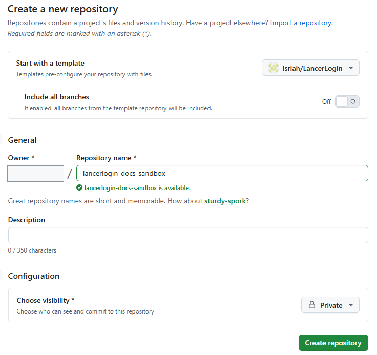
Keep it private and do not fork. The private repository holds your deployment history and secrets. The installation workflow refuses to run in a public repository, even when the secrets are present.
2. Create the production environment
- In your private repository, open Settings › Environments › New environment.
- Enter the exact name
productionand select Configure environment. - Required reviewers are optional and depend on your GitHub plan. When they are set, each installation or update run waits for a reviewer to approve it. Leave the branch and tag rules unchanged.
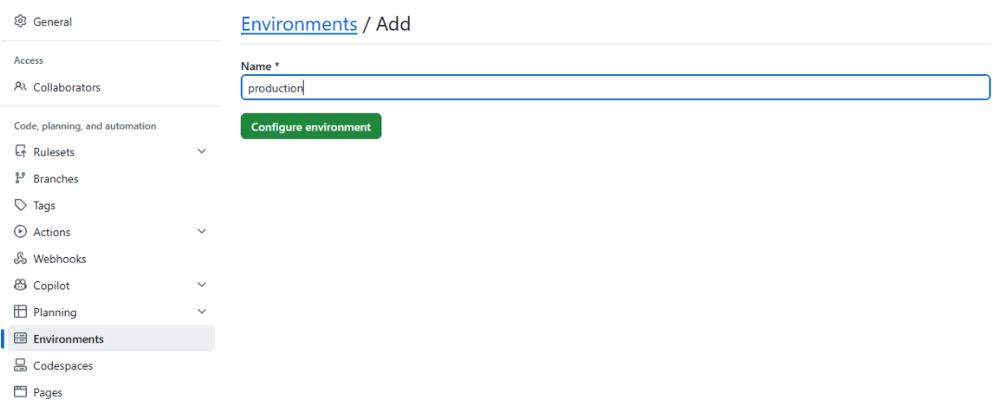
Use the exact name
Enter production. The installation and update workflows look for this environment.
Secrets go here
The secrets and variables in the next steps belong to this environment, not to the repository.
3. Create the Cloudflare API token
- Sign in to Cloudflare and select the account that will own this installation.
- Open Manage account › Account API tokens › Create Token. Cloudflare's account API token guide describes the same page.
- Give the token a name you will recognize, such as
LancerLogin deployment. The name is only a label for you. - Under Permission policies, select Start from scratch. The ready-made templates grant either more or less than LancerLogin needs.
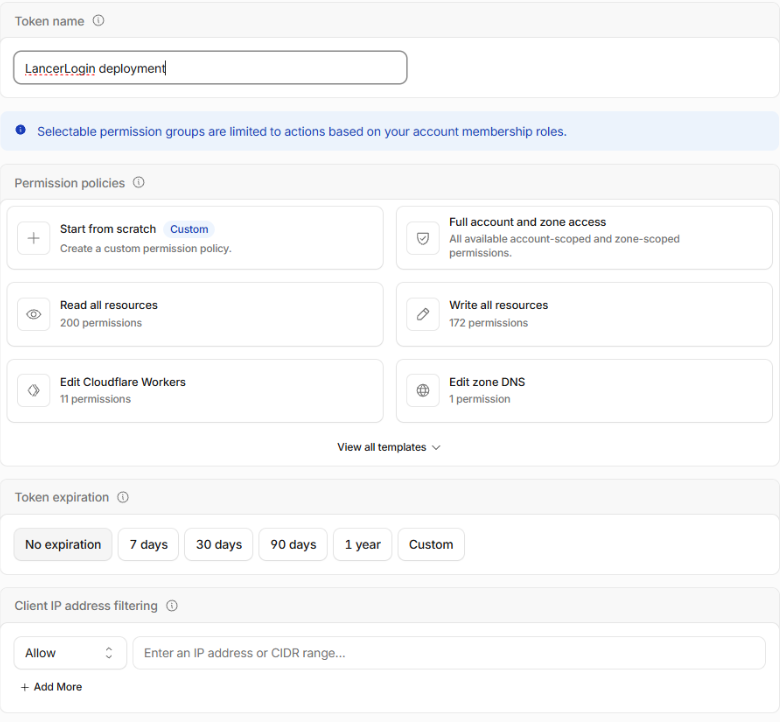
- Keep the scope on Entire Account. The token covers only the one account you selected. Then add exactly these four permissions, searching for each group by name:
| Permission group | Access | Why LancerLogin needs it |
|---|---|---|
| Workers Scripts | Edit | Deploy and update the API Worker. Cloudflare labels this permission group "Legacy". Use it anyway. |
| D1 | Edit | Create the database and apply its migrations. |
| Pages | Edit | Create and update the dashboard project. |
| Account Settings | Read | Confirm that the token belongs to the account you selected. |
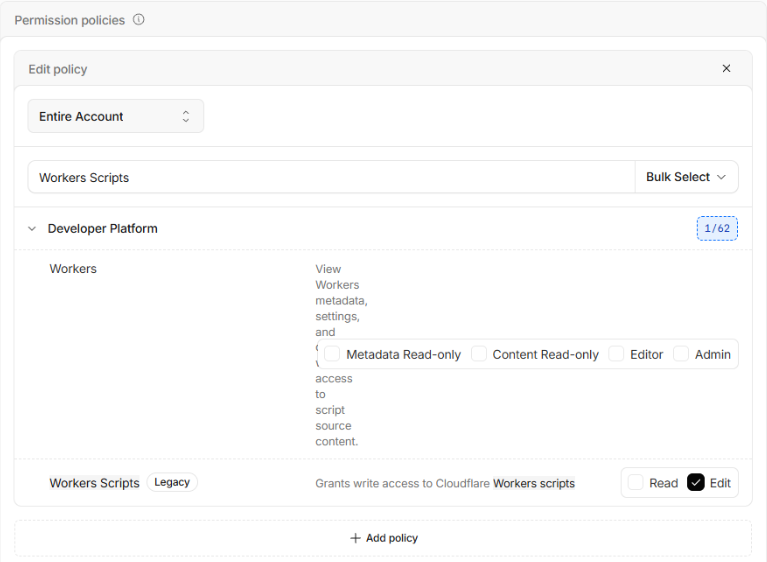
- Choose an expiration that suits your organization. Leave IP filtering empty. When the token expires, create a new one and replace the GitHub secret before the next update.
- Continue to the Review token page. It lists the permissions as Workers Scripts Write, D1 Write, Pages Write, Account Settings Read. Cloudflare shows the level you chose as Edit as "Write" here; that is expected. Go back if anything else appears.
- Select Create token and copy the value immediately. Cloudflare shows it only once. The value starts with
cfat_. Keep the page open until you have saved it in GitHub.
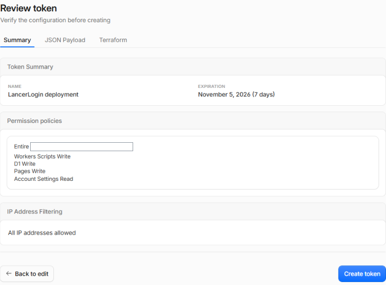
Do not add zone, DNS, billing, or member permissions. LancerLogin does not need them.
4. Copy the Cloudflare Account ID
- On any Cloudflare dashboard page, press Ctrl+K (Command+K on macOS) to open quick search.
- Type
Copy account IDand select that command. It copies the 32-character account ID. A zone ID will not work.
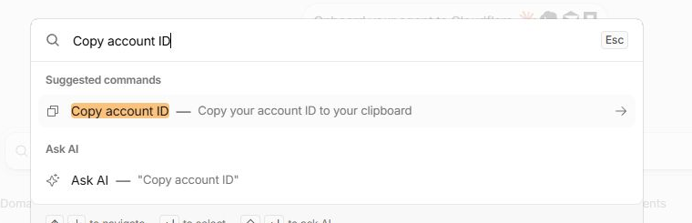
Use the command
Quick search finds the account ID without hunting through account pages.
Account, not zone
The workflow checks the account ID against the token before it creates anything.
5. Add the environment secrets
Open Settings › Environments › production. Under Environment secrets, select Add environment secret once for each row. Enter the exact name and paste the value, then select Add secret.
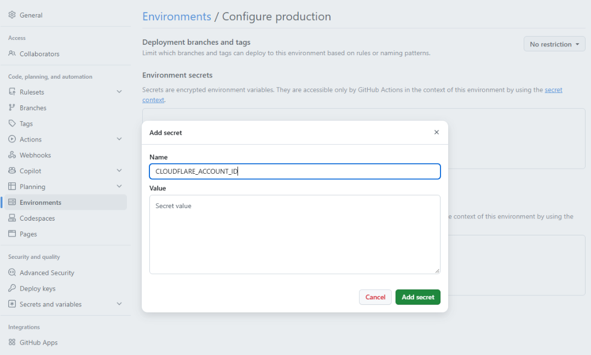
| Secret name (exact) | Required | Value |
|---|---|---|
CLOUDFLARE_API_TOKEN | Yes | The token value from step 3 (starts with cfat_), not its name. |
CLOUDFLARE_ACCOUNT_ID | Yes | The account ID from step 4. |
LANCERLOGIN_SETUP_CODE | Yes | A new random value of at least 16 characters from your password manager. You enter it once, when you create the first Admin. |
LANCERLOGIN_WEB_UPDATE_TOKEN | Optional | A GitHub token that enables one-click dashboard updates. See Set up one-click updates. You can add it now or later. |
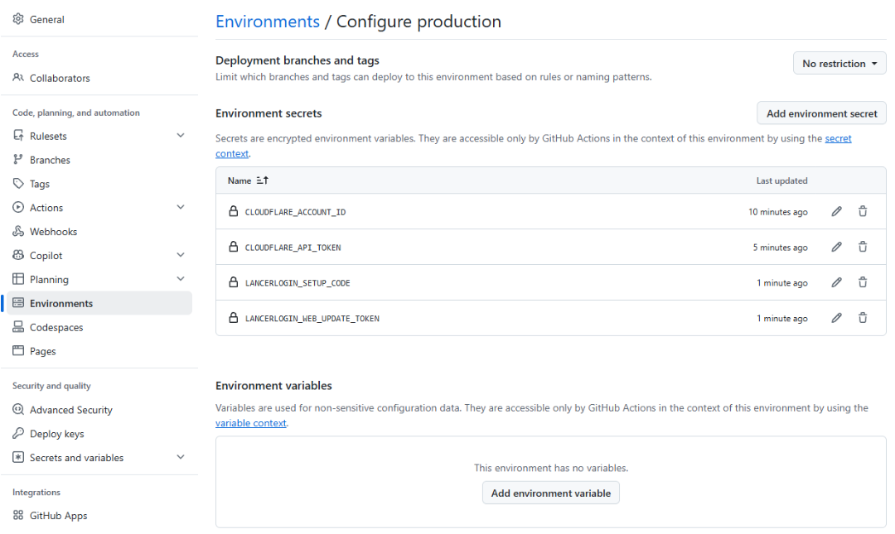
Use secrets, not variables. GitHub never shows a saved secret again. You can replace one later. The setup code protects first-Admin creation only. It is not the Admin password.
You can change LANCERLOGIN_SETUP_CODE later while no Admin exists yet. Update the secret, then run the workflow again with operation resume and the same slug to apply it.
6. Run the installation workflow
- In your private repository, open Actions › Install or upgrade LancerLogin › Run workflow.
- For operation, choose
create. - For release, keep
latest stable, the only choice. The workflow installs the newest public LancerLogin release. - For installation_slug, enter a name for this installation, such as
example-robotics-team. It must start with a lowercase letter and be 3 to 41 characters of lowercase letters, numbers, and hyphens. - Select Run workflow. If the environment has required reviewers, approve the pending
productiondeployment.
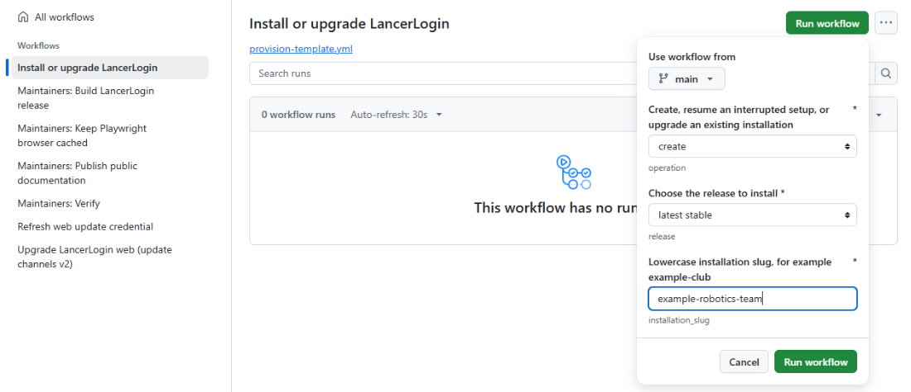
Before it creates anything, the run checks your inputs and secrets with read-only requests: the token's permissions, that the account has a workers.dev subdomain, and that the dashboard address is free. It then builds LancerLogin and creates the Cloudflare resources only after the builds succeed. If a check fails, the run stops with an error that names the problem and the fix; see Troubleshoot the installation workflow.
The slug names the three Cloudflare resources the workflow creates:
| Resource | Name |
|---|---|
| API Worker | <slug>-api |
| D1 database | <slug>-data |
| Pages dashboard | <slug>-dashboard, served at https://<slug>-dashboard.pages.dev |
Pages addresses are global across Cloudflare. If another account already uses <slug>-dashboard.pages.dev, the run stops and asks for another slug. If a run is interrupted, run the workflow again with operation resume and the same slug; it finishes the interrupted installation.
7. Save the installation variables
When the run succeeds, its summary shows the release, the dashboard and Worker API links, and a table of Environment variables for future updates. The workflow cannot set these itself, so save them now:
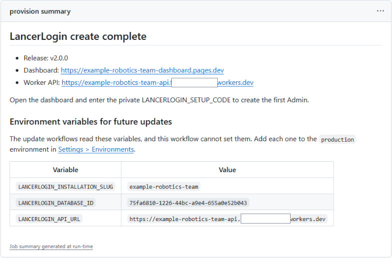
- Open Settings › Environments › production and select Add environment variable.
- Add each variable with the value from the run summary:
| Variable name (exact) | Value |
|---|---|
LANCERLOGIN_INSTALLATION_SLUG | The installation slug. |
LANCERLOGIN_DATABASE_ID | The D1 database ID. |
LANCERLOGIN_API_URL | The API Worker address. |
Then open the dashboard link and continue with First sign-in and setup.
Optional: Google sign-in
Admins and Operators can sign in with a username and password, with Google, or with either. You only need this section if you plan to choose Google OAuth or Both methods when you create the installation, or to add Google sign-in later in Settings › Integrations. Google calls the configuration area Google Auth Platform. Its sections are Branding, Audience, Clients, Data Access, and Verification Center. Google's Google Auth Platform overview describes the same flow.
Choose the project, branding, and audience
- Open Google Auth Platform. Select a project your organization owns, or create one and choose Get started.
- Under Branding, use a recognizable app name, select a support email, and add a monitored developer contact email. Google's branding guide explains when a logo, homepage, privacy policy, or brand verification is required.
- Under Audience, choose Internal only when every dashboard user belongs to the project's Google Workspace or Cloud Identity organization. Otherwise choose External.
- For an External audience, Testing is for a trial and In production publishes the app for ongoing use. Review Google's audience and publishing status guide before deciding. Workspace administrator policy can still block access.
Keep Data Access limited to sign-in
Under Data Access, keep only openid, email, and profile. Do not add Drive, Calendar, Gmail, or other scopes for sign-in. Google's Data Access guide explains scope management.
Create the Web application client
- Under Clients, choose Create client and select Web application. Do not create a Desktop client and do not add an Authorized JavaScript origin.
- Under Authorized redirect URIs, add your installation's callback address. It has this form:
Callback address › https://<slug>-dashboard.pages.dev/api/auth/google/callback
The Create your installation form and Settings › Integrations show the exact value with a copy button. Google compares it exactly, including the trailing slash.
- Create the client and save the client ID and client secret in your password manager. Google shows a new secret only once. Google's Clients guide covers creating and rotating secrets.
- Enter the client ID, the client secret, and the first Admin's Google email in the Create your installation form, or later in Settings › Integrations. LancerLogin encrypts the secret and never displays it again.
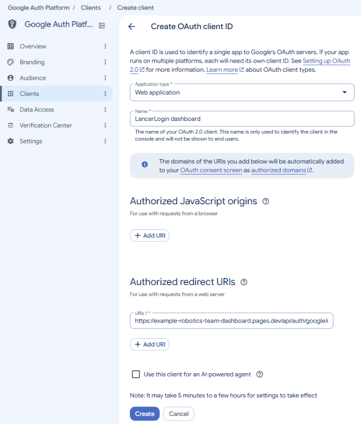
Finish verification
Google's Verification Center and LancerLogin's integration verification are separate. An External app in production may need Google brand verification before its name or logo appears. LancerLogin's basic sign-in scopes do not need sensitive-scope review. After you save credentials in Settings, choose Verify with Google and sign in as an active Admin. LancerLogin marks Google sign-in as configured only after that sign-in succeeds.
Google sign-in can be turned off or removed only while at least one active Admin can sign in with a password.